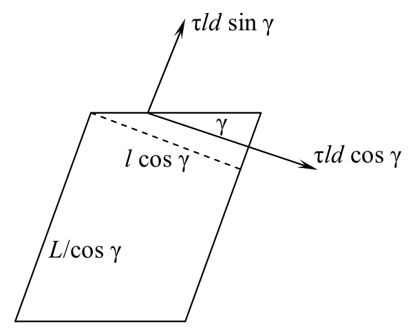

원문: Romanian Master of Physics 2012, PROBLEM No. 2 해설. 배점은 원문대로 pt로 표기한다.
막대의 중심으로부터 거리 $x$에 있는 막대의 요소 $\mathrm{d}x$를 생각하자. 각 요소의 질량은 $\mathrm{d}m = m\,\mathrm{d}x/L$이다. 어느 순간 막대의 길이를 $2l$, 그에 대응하는 영역 $x$의 길이를 $y$라 하자.
물체는 항상 균질하므로
\[\frac{y}{x} = \frac{l}{L/2}\]어느 순간 막대 양 끝의 속도를 $v$라 하자.
\[v = \frac{\mathrm{d}l}{\mathrm{d}t} = \frac{\mathrm{d}\left(2l-L\right)}{2\,\mathrm{d}t} = \frac{\mathrm{d}\left(\dfrac{2l-L}{L}\right)}{\dfrac{2\,\mathrm{d}t}{L}} = \frac{L\,\mathrm{d}\varepsilon}{2\,\mathrm{d}t} = \frac L2\,\dot\varepsilon\]고려한 요소의 속도는 다음과 같다.
\[v(x) = \frac{\mathrm{d}y}{\mathrm{d}t} = \frac{\mathrm{d}\left(\dfrac{lx}{L/2}\right)}{\mathrm{d}t} = \frac{x}{L/2}\,\frac{dl}{dt} = \frac{xv}{L/2} = \frac{2x}{L}\,\frac{L\dot\varepsilon}{2} = x\dot\varepsilon\]막대의 운동 에너지는 다음과 같다.
\[E_\text{kin} = 2\int_0^{L/2}\frac{dmv^2(x)}{2} = \int_0^{L/2}x^2\dot\varepsilon^2\,\frac{mdx}{L} = \frac{m\dot\varepsilon^2}{L}\,\frac{x^3}{3}\bigg|_0^{L/2} = \frac{mL^2\dot\varepsilon^2}{24}\]막대의 단면적을 $S$, 부피를 $V$라 하자. 장력(tensile force) $\sigma S$가 한 미소 일은 탄성 퍼텐셜 에너지의 증가량과 같다.
\[\mathrm{d}E_\text{pot} = \mathrm{d}W = F\,\mathrm{d}(2l) = \sigma S\,\mathrm{d}(2l-L) = E\varepsilon\frac{V}{L}\,\mathrm{d}(2l-L) = \frac{mE}{\rho}\,\varepsilon\,\mathrm{d}\varepsilon = \mathrm{d}\left(\frac{mE}{2\rho}\varepsilon^2\right) \Rightarrow\] \[E_\text{pot} = \frac{mE\varepsilon^2}{2\rho}\]$L$로 나누면 다음을 얻는다.
\[m\left(\frac{L\varepsilon}{12}\right)^{\boldsymbol{\cdot\cdot}} = -\sigma S \Rightarrow \ddot x_\text{equivalent} = \left(\frac{L\varepsilon}{12}\right)^{\boldsymbol{\cdot\cdot}}\]다시 $m$으로 나누면 다음을 얻는다.
\[\frac{L^2}{12}\ddot\varepsilon+\frac E\rho\varepsilon = 0 \Rightarrow \omega^2 = \frac{12E}{\rho L^2} \Rightarrow T_\text{long} = \pi L\sqrt{\frac{\rho}{3E}}\]반지름 $x$, 두께 $\mathrm{d}x$인 매우 얇은 구 껍질을 생각하자. 그 질량은 다음과 같다.
\[\mathrm{d}m = m\,\frac{4\pi x^2\mathrm{d}x}{\dfrac{4\pi R^3}{3}} = \frac{3m}{R^3}x^2\,\mathrm{d}x\]어느 순간 구의 반지름을 $r$, 구 표면의 속도를 $v$라 하자. 논증은 A 부분과 비슷하게 진행된다.
\[v = R\dot\varepsilon \Rightarrow v(x) = x\dot\varepsilon \Rightarrow \mathrm{d}E_\text{kin} = \frac{\mathrm{d}m\,v^2(x)}{2} = \frac{3mx^2\,\mathrm{d}x}{R^3}\,\frac{x^2\dot\varepsilon^2}{2} \Rightarrow E_\text{kin} = \frac{3mR^2\dot\varepsilon^2}{10}\] \[\mathrm{d}E_\text{pot} = \mathrm{d}W = \sigma S\,\mathrm{d}r = \varepsilon E4\pi R^2R\,\mathrm{d}\varepsilon = \frac{3EV\,\mathrm{d}\left(\varepsilon^2\right)}{2} = \mathrm{d}\left(\frac{3mE}{2\rho}\varepsilon^2\right)\] \[E_\text{mech} = \frac{3m}{2}\left(\frac{R^2\dot\varepsilon^2}{5}+\frac{E\varepsilon^2}{\rho}\right) = \text{constant}\]구하려는 해를 연립 방정식에 대입하면 다음을 얻는다.
\[\begin{cases}-\dfrac{\omega^2AL^2}{12}+\dfrac{E\left(A+\mu B\right)}{\rho\left(1-\mu^2\right)} = 0\\[3mm] -\dfrac{\omega^2Bl^2}{12}+\dfrac{E\left(B+\mu A\right)}{\rho\left(1-\mu^2\right)} = 0\end{cases}\]두 방정식을 변끼리 나누면 더 간단한 식을 얻는다.
\[\frac{AL^2}{Bl^2} = \frac{A+\mu B}{B+\mu A}\]두 진폭의 비를 $r$로 나타내자.
\[r\frac{L^2}{l^2} = \frac{r+\mu}{1+r\mu} \Rightarrow \mu L^2r^2+\left(L^2-l^2\right)r-\mu l^2 = 0 \Rightarrow\] \[r_{1;2} = \frac{-\left(L^2-l^2\right)\pm\sqrt{\left(L^2-l^2\right)^2+4\mu^2L^2l^2}}{2\mu L^2}\]$r$을 두 번째 방정식에 다시 대입하면 다음을 얻는다.
\[\omega^2 = \frac{12E}{\rho l^2\left(1-\mu^2\right)}\left[1+\mu\,\frac{-\left(L^2-l^2\right)\pm\sqrt{\left(L^2-l^2\right)^2+4\mu^2L^2l^2}}{2\mu L^2}\right] \Rightarrow\] \[\omega_{1;2} = \sqrt{\frac{6E\left[L^2+l^2\pm\mu\sqrt{\left(L^2-l^2\right)^2+\left(2\mu Ll\right)^2}\,\right]}{\rho L^2l^2\left(1-\mu^2\right)}}\]
판의 두께를 $d$라 하자. 전단력(shear force) $\tau ld$는 $L$ 방향($x$축)으로 늘이는 성분과 $l$ 방향($y$축)으로 줄이는 성분으로 분해할 수 있다.
\[\sigma_x = \frac{\tau ld\sin\gamma}{ld}\,;\quad \sigma_y = \frac{\tau ld\cos\gamma}{\left(L/\cos\gamma\right)d} \Rightarrow\] \[\varepsilon_x = \frac{\tau\sin\gamma}{E}-\mu\left(-\frac{\tau l\cos^2\gamma}{LE}\right),\qquad \varepsilon_y = -\frac{\tau l\cos^2\gamma}{LE}-\mu\frac{\tau\sin\gamma}{E}\]그런데
\[\varepsilon_x = \frac{\dfrac{L}{\cos\gamma}-L}{L} = \frac{1-\cos\gamma}{\cos\gamma}\,;\quad \varepsilon_y = \frac{l\cos\gamma-l}{l} = -\left(1-\cos\gamma\right) \Rightarrow\] \[\begin{cases}\dfrac E\tau\,\dfrac{1-\cos\gamma}{\cos\gamma} = \sin\gamma+\mu\dfrac lL\cos^2\gamma\\[3mm] \dfrac E\tau\left(1-\cos\gamma\right) = \dfrac lL\cos^2\gamma+\mu\sin\gamma\end{cases}\]두 번째 방정식에 $\mu$를 곱하여 첫 번째 방정식에서 빼면 다음을 얻는다.
\[\begin{aligned}&\frac E\tau\left(1-\cos\gamma\right)\left(\frac{1}{\cos\gamma}-\mu\right) = \sin\gamma\left(1-\mu^2\right)\\ &\Rightarrow \frac{E\gamma^2}{2\tau}\left(1-\mu\right) \approx \gamma\left(1-\mu^2\right) \Rightarrow \gamma = \frac{2\tau\left(1+\mu\right)}{E}\end{aligned}\] \[G = \frac{E}{2\left(1+\mu\right)}\]전단 변형(shear deformation)에 관여하는 물리량들은 길이 방향 변형을 기술하는 물리량들과 완전히 유사하다.
\[T_\text{slant} = \pi L\sqrt{\frac{\rho}{3G}} = T_\text{long}\sqrt{2\left(1+\mu\right)}\]반지름 $x$, 두께 $\mathrm{d}x$인 매우 얇은 원통 껍질들을 생각하자. 원통이 비틀릴 때 각 껍질은 매우 작은 전단을 받는다.
\[T_\text{twist} = \pi L\sqrt{\frac{\rho}{3G}}\]원통의 한쪽 뚜껑이 다른 쪽에 대해 회전한 매우 작은 각을 $\alpha$라 하자. 그러면 원통 껍질의 기울어진 각은 다음과 같다.
\[x\alpha = L\gamma \Rightarrow \gamma = \frac xL\alpha\]대응하는 전단 응력(shear stress)은
\[\tau = G\frac xL\alpha\]뚜껑에 작용하는 미소 전단력은
\[\mathrm{d}F = \tau\,\mathrm{d}S = G\frac xL\alpha2\pi x\,\mathrm{d}x\]대응하는 미소 돌림힘은
\[\mathrm{d}M = \mathrm{d}F\cdot x = \frac{2\pi G\alpha x^3\mathrm{d}x}{L}\] \[M = \frac{2\pi G\alpha}{L}\int_0^Rx^3\,\mathrm{d}x = \frac{2\pi GR^4\alpha}{4L} \Rightarrow C = \frac{\pi GR^4}{2L} = \frac{\pi ER^4}{4L\left(1+\mu\right)}\]